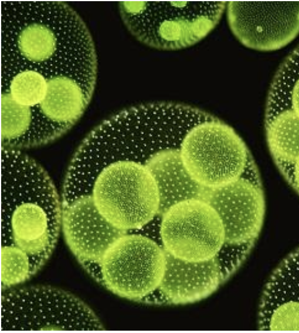
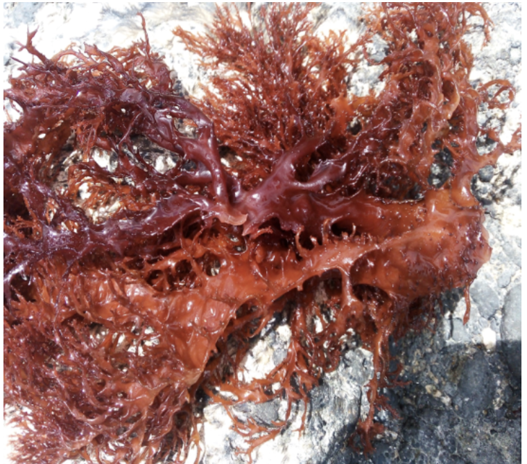
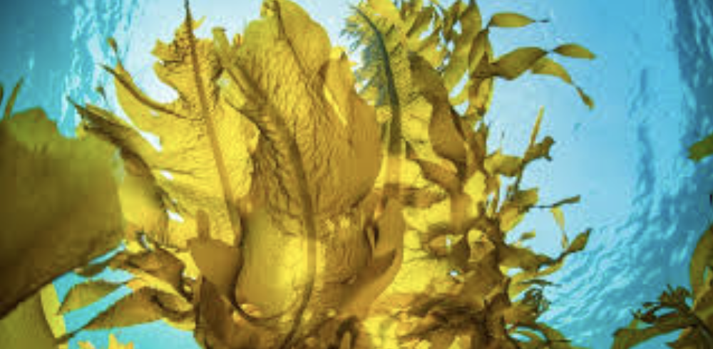

À propos des algues
Les algues ne sont pas de simples plantes du bord de mer : ce sont des acteurs majeurs des océans et des filières d’avenir lorsqu’on les comprend et qu’on les valorise avec méthode.
Un pilier des océans
Les macroalgues et le phytoplancton produisent une part importante de l’oxygène que nous respirons et structurent des habitats où se nourrissent et se reproduisent de nombreuses espèces. Protéger ces milieux, c’est aussi préserver des chaînes alimentaires et des communautés côtières.
À l’échelle microscopique, des organismes comme certaines colonies d’algues vertes rappellent que le vivant marin repose souvent sur la coopération entre de très nombreux individus — une métaphore naturelle pour une association fondée sur le réseau et le partage.
Recherche et usages durables
La science étudie la composition, le cycle de vie et l’écologie des algues pour proposer des usages responsables : matières premières, biomolécules d’intérêt, restauration côtière, et bien d’autres pistes encore en exploration.
Uhai Océan encourage les échanges entre naturalistes, laboratoires et porteurs de projets, afin que l’innovation reste compatible avec la préservation des stocks, des écosystèmes et des savoirs locaux.

Galerie
Quelques images illustrant la diversité et la beauté du monde algal.

